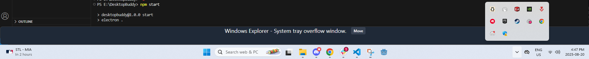
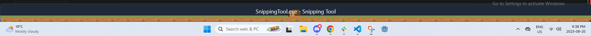
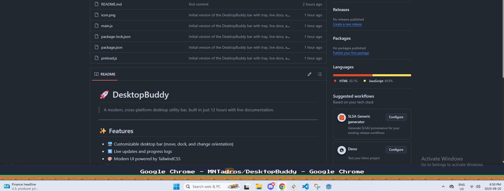
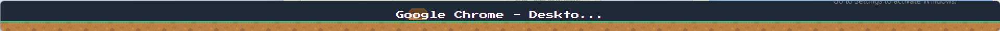
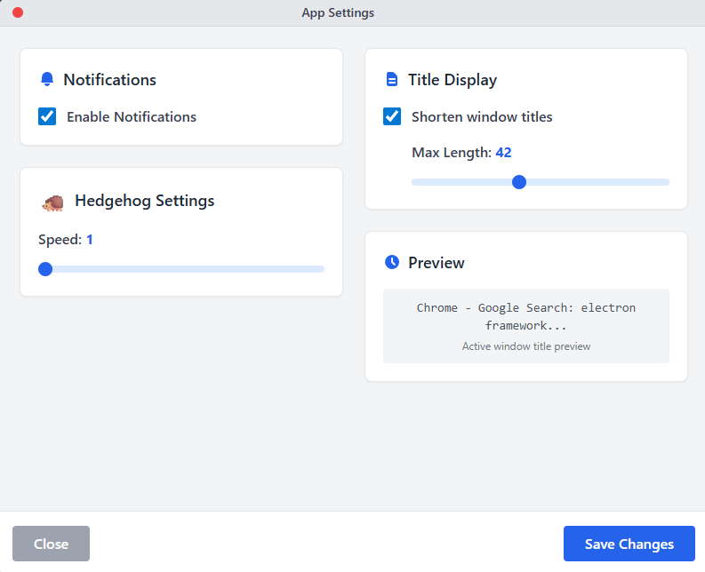

Live Progress
Start Time: 3PM EST
Current Time:
Elapsed: 11:12 PM EST
Updates & Progress Logs
Update 1
30 min
Initialized Electron project, configured main process, and built a minimal floating bar UI with draggable support.
// main.js snippet
const { app, BrowserWindow } = require('electron');
app.whenReady().then(() => {
const win = new BrowserWindow({
width: 400,
height: 60,
frame: false,
alwaysOnTop: true,
transparent: true,
webPreferences: { nodeIntegration: true }
});
win.loadFile('index.html');
});
Update 2
(1 hour)
Added TailwindCSS, improved bar orientation logic, started live docs.
Update 3
(1 hour 45 minutes)
Refactored code, improved layout for vertical bars, added DesktopBuddy logo to Windows Tray.

Update 4
(3 hour 20 minutes)
Added colorful background tiles, improved hedgehog animation, and temporarily disabled move button for simplicity, will definitely add it back later.

Update 5
(3 hour 50 minutes)
Cleaned up code, got a fully functional super basic version bar version, currently working on adding all the Buddy features. The current ones planned are:
- Pomodoro Timer
- Window management / trying to get you off distractions (Instagram / Tiktok / etc)
- Customizable settings (through windows tray)
- Buddy interactions

Update 6
(6 hours )
Major Settings Overhaul: Completely redesigned the settings window with a modern, draggable interface and real-time preview functionality.
- Added professional macOS-style custom window
- Created real-time title shortening & preview
- Added proper draggable functionality
- Fixed settings persistence across app restarts

Code Refactoring: Completely restructured main.js for better maintainability and readability:
- Modularized functionality into logical sections
- Added error handling and safety checks
- Improved function naming and documentation
// Before: Monolithic structure
// After: Modular organization with clear separation
// Window Management
function createMainWindow() { ... }
function openSettingsWindow() { ... }
// Tray Management
function setupTray() { ... }
function createTrayContextMenu() { ... }
// IPC Handlers
function setupIpcHandlers() { ... }
function handleSettingsChanged() { ... }
// Bar Positioning
function moveBar() { ... }
function getNextPosition() { ... }

Next: Adding Pomodoro timer functionality and distraction blocking features
Update 7
(8 hours)
Major Milestone: DesktopBuddy is now fully usable as a standalone Windows app!
- ✅ Pomodoro Timer implemented with start/stop cycles and tray notifications
- ✅ All settings + controls are in tray menu for a minimal, distraction-free bar
- ✅ Packaged as a portable .exe, no installer needed, just download and run
To try it out:
- Download the latest
.exefrom GitHub - Run
DesktopBuddy-Standalone.exe - Find all controls in the Windows tray menu